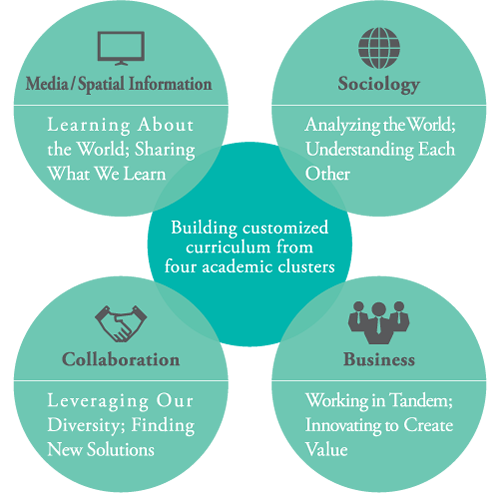

English
Aoyama Gakuin University (AGU)
School motto: “The Salt of the Earth, The Light of the World”
Aoyama Gakuin University, established in 1949, is the largest school in Aoyama Gakuin. GAU has established a reputation for the quality of its teaching and its international ambience, and is widely recognized as one of the leading universities in Japan. In addition to providing specialized instruction, it cultivates individuals with strong ethics and social values, who actively carry out their responsibilities toward all peoples and communities with a broad perspective on the world and society.
140-Year Tradition of Excellence
Dora E. Schoonmaker established a girls’ elementary school in 1874. It flourished, and was eventually integrated with two boys’ schools, to form Aoyama Gakuin.
Continuing the Tradition of Excellence in 2015
- Competitive university in Japan
- 10 faculties, 24 departments
- Approximately 19,000 students
Sagamihara Campus
- Large campus located on the outskirts of Tokyo
- Excellent environment for research and education
- ICT – boasting state of the art facilities
- Dormitories for international students
Aoyama Campus
- Located in the heart of Tokyo
- The Center of culture and fashion
School of Global Studies and Collaboration (GSC)
- GSC develops students’ global perspectives especially in the context of inter-Asian collaboration and cooperation
- GSC takes and interdisciplinary curricular approach by organizing four clusters based on the broad social science field.
- Through project-based learning activities taught by experienced practitioners, the students will integrate theories into professional practice for solving today’s social problems and improving the global society.
- Students can tailor their classes from the available courses in English and Japanese according to their interests and study goals.
GSC Curriculum (4 clusters)

Exchange Programs
AGU has student exchange partnerships with 84 universities, and exchange agreement with 106 universities world-wide, resulting in a vibrant and diverse population of students. AGU’s international atmosphere is ideal for studying global collaboration.
- Japan Studies (from fall semester, 2015)
- GSC provides international students with a unique opportunity in English to study 16 courses in four topical areas.
- Japanese Economy, Business and Policy
- Japanese History
- Japanese Geography
- Japanese Culture
- Japanese Language Programs
-
- AGU offers Japanese language courses ranging from introductory to advanced levels.
- Introductory courses at Sagamihara campus do not require any Japanese language proficiency at the time of entrance.
Extracurricular Programs
- Corporate internships [through a partnership with Sagamihara City]
- Field trips
- Japanese culture experiences such as tea ceremony and art of flower arrangement
Accommodations
- AGU has male and female international dormitories for both international and Japanese students.
Student Support
- Advisors/Tutors System
A faculty advisor and a student tutor will be assigned to offer assistance to each exchange student. - Chat Room
Students can enjoy speaking sessions in various languages, from beginning to advanced levels, with other students.
AOYAMA GAKUIN UNIVERSITY
- Contact
- Academic Affairs Division
Sagamihara Campus Administration Department, Aoyama Gakuin University
Address: 5-10-1 Fuchinobe, Chuo-ku, Sagamihara, Kanagawa 252-5258, Japan
E-mail: info@gsc.aoyama.ac.jp
Phone: +81-42-759-6050
Fax: +81-42-759-6035
GSC homepage -> www.gsc.aoyama.ac.jp/english/
AGU homepage -> www.aoyama.ac.jp/en/